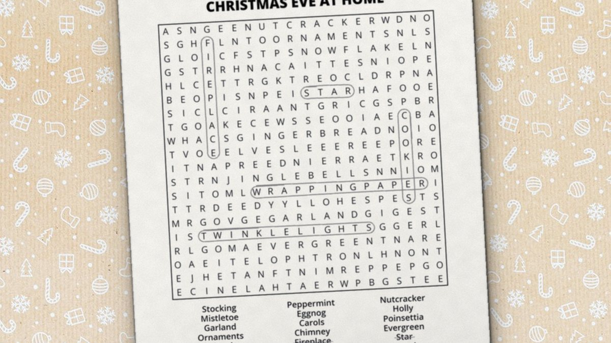

October 25, 2026 · By Pixel Punk Studio
December is full of activities for older adults, but many of them don't suit everyone. A loud party can overwhelm, a quiz can feel like a test, and crafts need steady hands. If you are planning the Christmas calendar for a senior center, a care home or a memory care unit, or just visiting a parent over the holidays, you need something calm that every person can join at their own level. A Christmas word search does exactly that: the words are familiar, there are no rules to remember, and it works alone, in pairs or as a whole room. Here is how to make it work for everyone.
Pick the right level first
Most frustration comes from a puzzle that is too small or too long, not from the person solving it. Keep three levels on hand and let each person choose:
- Jumbo print (easiest). Very big letters (30 point), a small grid and about 18 words. Best for low vision, shaky hands or a first puzzle after a long break.
- Large print (standard). Big, clear letters, around 30 words on a full letter-size page. Comfortable for most seniors for half an hour or more.
- Team puzzle. One large print puzzle shared by two or three people. Good for anyone who would rather chat than search alone.
Whatever the level, choose words everyone knows: stockings, carols, gingerbread, sleigh. Familiar Christmas words are quicker to spot and much more fun to talk about.
9 Christmas word search games for seniors
- The memory ornament. When someone finds a word like "tinsel" or "carols", ask them to share a Christmas memory about it. Write the word on a paper ornament and hang it on a paper tree on the wall: by Christmas the tree is full of the group's stories.
- Read-aloud search. One person reads each word slowly, everyone looks at the same time, and whoever finds it first says "found it!". Nobody has to read the small word list, and quieter players can simply follow along.
- Twelve days of puzzles. Hand out one puzzle a day for the twelve days before Christmas. A small daily ritual gives everyone something to look forward to.
- Sing the word. Use a puzzle full of carol words. Each time a word is found, the group sings the line it comes from. It works even for people who no longer enjoy the search itself.
- Christmas word bingo. Give each person a puzzle. Call out words from the list; players circle them in the grid, and the first to find five calls "bingo!". Every player has the same words, so there is no losing card.
- Pairs across the room. Pair a resident with a visitor, a volunteer or a grandchild, one puzzle and two pencil colors between them. It gives family visits an easy shared focus.
- Cookie break puzzle. Set out puzzles with the afternoon tea and Christmas cookies, no instructions, no timer. People join in as they like.
- The holiday card puzzle. Slip a printed puzzle into the Christmas cards you send to older relatives who live alone. It is a small gift that keeps them busy on a quiet afternoon.
- Make your own Christmas list. Ask the group for 15 words about their own Christmases (a hometown, a favorite dish, an old toy) and turn them into a word search for next week.
Tips for memory care and mixed-ability groups
- Keep sessions short. Fifteen to twenty minutes is plenty. Stop while everyone is still enjoying it.
- Same time, same place. A regular slot, like after morning coffee, makes the activity familiar and easy to settle into.
- Make the page bigger, not just the letters. Print one puzzle per page at actual size, and enlarge a copy on the office copier for anyone who needs it.
- Use a clipboard and a thick pencil or highlighter. They are easier to hold and the page won't slide on a lap.
- Help without taking over. Point to the right row ("it's somewhere on this line") rather than circling the word. The find still belongs to them.
- Never mark anything wrong. A half-finished puzzle is a good morning. Keep the solution handy and celebrate every word.
- Keep the room calm. Soft Christmas music, good light and fewer people per table usually work better than a busy party room.
Free Christmas puzzles to print
Below are three free Christmas printables at different levels: an extra large jumbo print puzzle, and two large print puzzles with 30 words each. All come with the solution and print on regular letter paper. For the whole season, our Cozy Christmas Word Search book has 55 large print Christmas puzzles, from the Nativity and the Nutcracker to Christmas around the world.